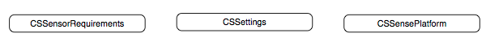
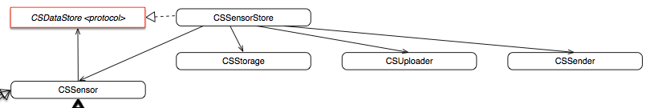
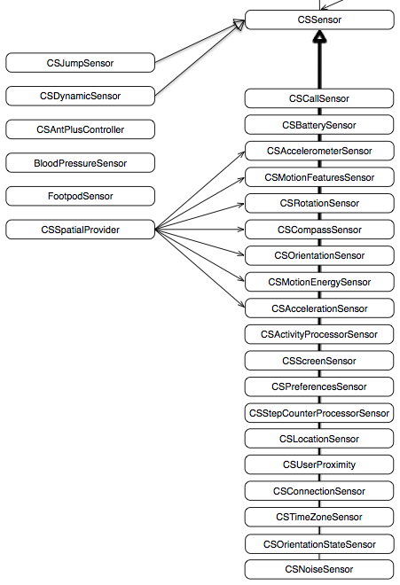

API and Architecture overview Document
This section provides a description of the high level overview of the Sense iOS Library. All classes belonging to the library are prefixed CS standing for CommonSense.
Interface

The library has three main interface classes for any app that uses the library: CSSensePlatform, CSSettings, and CSRequirements.
CSSensorRequirements
CSSensorRequirements is a singleton that can be accessed through
[CSSensorRequirements sharedRequirements]
CSRequirements provides an extra layer on top of the CSSettings to manage potentially conflicting settings. The idea there is that all the different requirements coming from different sources are compared and the lowest value is used as the setting. Hence, the CSSensorRequirements updates the settings. Right now, requirements are used for settings related to indivdual sensors (including enabling/disabling and sample frequency).
CSSettings
The other two main interfaces to developers are provided by CSSettings.h and CSSensorRequirements.h. CSSettings is a singleton that manages all the settings in the app and can be accessed through
[CSSettings sharedSettings]
Settings manage the behavior of individual sensors and data providers, but also manage more general aspects of the app. Several methods are available for storing a setting and retrieving it. Moreover, whenever a setting is changed, a notification is send so that the new setting can be taken into account at other places.
CSSensePlatform
The primary interface is provided in CSSensePlatform.h. CSSensePlatform uses only class methods so there is never an instance of the CSSensePlatform. Instead, whenever
[CSSensePlatform initialize];
is called, this initializes a CSSensorStore object (a singleton) which coordinates most of the behavior in the app including local and remote persistency. Next to that, the CSSensePlatform provides functions for logging in, logging out, and registering a user (see also User Management), storing data in sensors (see also Persistency and Sensors), and retrieving data from sensors.
Specialist objects

Several specialist classes exist to further support and manages the behavior of the app.
CSStorage
The CSStorage class provides local persistency through an SQLite database. It contains tables for all the sensor data and with a list of all the sensors.
CSUploader
Uploads the data to the CommonSense cloud.
CSSender
Contains all the code for connecting with the CommonSense cloud.
CSDatastore
Protocol fro objects that can store sensor data.
CSSensorStore
The CSSensorStore is a central class that has instances of the sensors, of a CSStorage instance, of a CSUploader instance, and of a CSSender instance. It coordinates the storing and uploading behavior and instantiates sensors and sensor data providers.
Sensors

Next to the main interface classes a number of different sensors are available, mostly corresponding to the physical sensors in the phone. Every sensor is responsible for storing the sensor data and providing a data format for the stored data. All specific sensor classes inherit from CSSensor, which provides standard behavior for each sensor. In some cases, the sensor is also responsible for sampling the data based on the sample frequency, or to listening to event updates. In other cases, sensors get data from a provider class. Currently, there is a CSLocationProvider for data to the LocationSensor and VisistsSensor, and a CSSpatialProvider for data for the accelerometer sensor, motion features sensor, rotation sensor, compass sensor, orientation sensor, acceleration sensor, and motion energy sensor. Detailed specification of the different sensors can be found at the Sensors section.
Sensors can also be defined at runtime instead of at compile time by using an instance of the CSDynamicSensor class, which inherits from CSSensor and can be given a name and dataformat at runtime.
A number of special legacy sensors are also still included in the library. CSJumpSensor was used for Cosmic Jump Start game and detects jumps. CSAntPlusSensor is used to connect with the Wahoo Ant+ dongle, and the FootPodSensor and BloodPressureSensor connect to specifc Ant+ hardware devices.